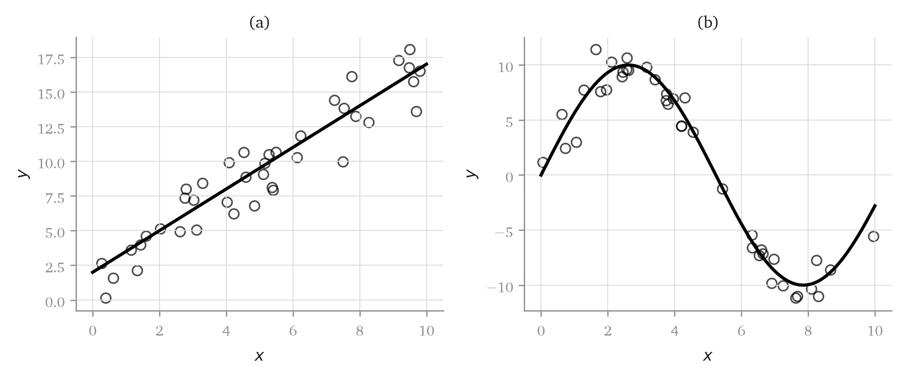
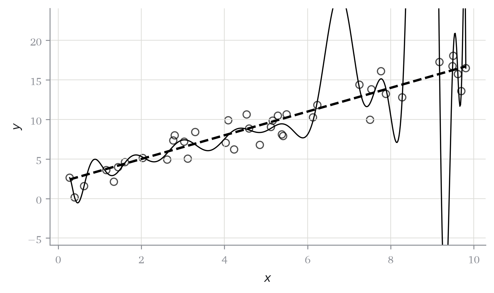

Código
import numpy as np
from matplotlib import pyplot as plt
rng = np.random.default_rng(1)
kw_puntos = dict(color="black", facecolors="none", s=38, alpha=0.7)Qué es un problema de predicción y qué hay que decidir para plantearlo
Abre el cuaderno para completar en clase en Google Colab.
Antes de definir nada, vamos a mirar unos datos.
import numpy as np
from matplotlib import pyplot as plt
rng = np.random.default_rng(1)
kw_puntos = dict(color="black", facecolors="none", s=38, alpha=0.7)n = 40
x_a = np.sort(rng.uniform(0, 10, n))
y_a = 1.5 * x_a + 2 + rng.normal(scale=2.0, size=n)
x_b = np.sort(rng.uniform(0, 10, n))
y_b = 10 * np.sin(0.6 * x_b) + rng.normal(scale=1.2, size=n)fig, axs = plt.subplots(1, 2, figsize=(8, 3.4))
for ax, (xx, yy, t) in zip(axs, [(x_a, y_a, "(a)"), (x_b, y_b, "(b)")]):
ax.scatter(xx, yy, **kw_puntos)
ax.set(xlabel="$x$", ylabel="$y$", title=t)
plt.tight_layout()
Los dos paneles de Figura 1.1 tienen algo en común: se ve que \(x\) y \(y\) están relacionadas, y se ve cómo. En el panel (a), \(y\) crece de forma aproximadamente proporcional a \(x\). En el panel (b), \(y\) sube, baja y vuelve a subir. Si tapamos un punto cualquiera y preguntamos qué valor de \(y\) le corresponde, casi cualquier persona da una respuesta razonable, y la da sin hacer ninguna cuenta.
Es decir: para detectar el patrón y para usarlo nos han bastado los ojos. El problema es que un ordenador no tiene ojos, y que con cinco predictores en lugar de uno tampoco los tenemos nosotros. La pregunta con la que arranca el curso es esta:
¿Cómo escribimos ese patrón de forma que una máquina pueda encontrarlo y usarlo?
La respuesta que vamos a desarrollar durante quince semanas es que el patrón se escribe como una función. En el panel (a) la función es una recta; en el panel (b), una curva. En los dos casos es un objeto matemático que toma un valor de \(x\) y devuelve un valor de \(y\).
fig, axs = plt.subplots(1, 2, figsize=(8, 3.4))
rejilla = np.linspace(0, 10, 200)
for ax, (xx, yy, ff, t) in zip(
axs,
[(x_a, y_a, lambda z: 1.5 * z + 2, "(a)"),
(x_b, y_b, lambda z: 10 * np.sin(0.6 * z), "(b)")],
):
ax.scatter(xx, yy, **kw_puntos)
ax.plot(rejilla, ff(rejilla), color="black", lw=2)
ax.set(xlabel="$x$", ylabel="$y$", title=t)
plt.tight_layout()
Conviene fijar los nombres antes de seguir, porque se usan en los quince capítulos.
Definición 1.1 (Problema de predicción supervisada) Disponemos de \(n\) observaciones \[ \mathcal{D}= \{(\mathbf{x}_i, y_i)\}_{i=1}^{n}, \qquad \mathbf{x}_i \in \mathbb{R}^{p}, \quad y_i\in \mathbb{R}. \]
Al vector \(\mathbf{x}_i\) lo llamamos predictores de la observación \(i\), y al número \(y_i\), respuesta. El objetivo es construir, a partir de \(\mathcal{D}\), una función \(\hat{f}: \mathbb{R}^{p} \to \mathbb{R}\) tal que \[ \hat{f}(\mathbf{x}) \approx y \] en observaciones \((\mathbf{x}, y)\) que no pertenecen a \(\mathcal{D}\). Al número \(\hat{f}(\mathbf{x})\) lo llamamos predicción y lo escribimos \(\hat{y}\).
Tres comentarios sobre Definición 1.1, uno por cada parte que se puede leer mal.
El adjetivo supervisada quiere decir que en los datos de partida aparecen las respuestas \(y_i\). Hay problemas donde no aparecen, y entonces el objetivo no es predecir nada; los describimos en Sección 1.6.
La condición no pertenecen a \(\mathcal{D}\) es la que da contenido al problema. Sin ella existe una solución trivial y sin ningún valor: memorizar la tabla. El capítulo siguiente lo convierte en un teorema.
El símbolo \(\approx\) no es descuido de notación. En Figura 1.1 los puntos no están sobre la curva, están alrededor. Escribir \(=\) sería falso y además sería una mala idea, y de por qué es una mala idea trata el capítulo 2.
Nos falta un nombre más. Una función suelta no se puede buscar: hay demasiadas. Lo que se busca es una función dentro de una familia fijada de antemano.
Definición 1.2 (Clase de hipótesis y parámetros) Una clase de hipótesis \(\mathcal{F}\) es un conjunto de funciones de \(\mathbb{R}^{p}\) en \(\mathbb{R}\) entre las cuales se busca \(\hat{f}\). Es habitual que las funciones de \(\mathcal{F}\) estén indexadas por un vector de parámetros \(\boldsymbol{w}\in \mathbb{R}^{q}\), y entonces escribimos \(f(\mathbf{x}; \boldsymbol{w})\), o simplemente \(f(\mathbf{x})\) cuando \(\boldsymbol{w}\) se sobreentiende.
Con la clase de hipótesis, buscar una función se convierte en buscar un vector de números, que es algo que un ordenador sabe hacer. El ejemplo con el que trabajaremos hasta el capítulo 9 es la clase de las funciones afines: \[ \mathcal{F}= \left\{ f(\mathbf{x}) = w_0+ \sum_{j=1}^{p} w_jx_j \ :\ \boldsymbol{w}\in \mathbb{R}^{p+1} \right\} . \]
Esta clase produce el panel (a) de Figura 1.2 pero no el (b). Que esa limitación es menos grave de lo que parece, y cómo se levanta sin cambiar ni una demostración, es el contenido del capítulo 9.
Plantear un problema de predicción consiste en tomar tres decisiones. Todos los métodos del curso, y también los que no vemos, se obtienen eligiendo las tres.
| Decisión | Pregunta que responde | Dónde se trata |
|---|---|---|
| Clase de hipótesis \(\mathcal{F}\) | ¿Entre qué funciones buscamos? | Caps. 2, 9, 13 |
| Pérdida \(\ell\) | ¿Qué queremos decir con que una predicción es buena? | Caps. 3, 4 |
| Optimizador | ¿Cómo encontramos la mejor función de \(\mathcal{F}\)? | Caps. 5, 6 |
La primera decisión es la que se ve en las figuras: rectas o curvas. La tercera es computacional. La segunda es la que suele darse por supuesta y la que más consecuencias tiene, así que la enunciamos con cuidado.
Definición 1.3 (Pérdida y riesgo empírico) Una función de pérdida es una función \(\ell: \mathbb{R}\times \mathbb{R}\to \mathbb{R}\) donde \(\ell(\hat{y}, y)\) mide el coste de haber predicho \(\hat{y}\) cuando el valor verdadero era \(y\). El riesgo empírico de un modelo sobre un conjunto de datos es la pérdida media: \[ \hat{R}(\boldsymbol{w}) = \frac{1}{n} \sum_{i=1}^{n} \ell\bigl(f(\mathbf{x}_i; \boldsymbol{w}),\, y_i\bigr) . \]
La pérdida más habitual es la cuadrática, \(\ell(\hat{y}, y) = (\hat{y}- y)^2\), y entonces el riesgo empírico es el error cuadrático medio. Pero no es la única y no siempre es la adecuada: si predecir de menos cuesta el triple que predecir de más, la pérdida cuadrática está midiendo otra cosa.
Elegida la pérdida, el problema queda escrito así: \[ \hat{\boldsymbol{w}}= \mathop{\mathrm{arg\,min}}_{\boldsymbol{w}} \hat{R}(\boldsymbol{w}) \tag{1.1}\]
A resolver Ecuación 1.1 se le llama minimización del riesgo empírico. Es la operación que se repite en todos los capítulos que siguen.
Antes de buscar un procedimiento, conviene intentarlo a mano. Sobre los datos del panel (a), la clase de hipótesis afín con un solo predictor tiene dos parámetros, y podemos probar valores.
def riesgo(w0, w1, x, y):
y_hat = w0 + w1 * x
return np.mean((y_hat - y) ** 2)
for w0, w1 in [(0.0, 1.0), (2.0, 1.0), (2.0, 1.5), (2.5, 1.4)]:
print(f"w0={w0:4.1f} w1={w1:4.1f} R = {riesgo(w0, w1, x_a, y_a):6.2f}")w0= 0.0 w1= 1.0 R = 22.49
w0= 2.0 w1= 1.0 R = 9.52
w0= 2.0 w1= 1.5 R = 2.22
w0= 2.5 w1= 1.4 R = 2.36En cuatro intentos el riesgo baja de 22,5 a 2,2, aunque el cuarto empeora respecto al tercero: probando a ojo no se avanza en línea recta. Con paciencia se llega a un valor razonable, así que el problema no es que el procedimiento no funcione. El problema es que no escala. Con dos parámetros y 60 valores para cada uno hay 3.600 combinaciones que probar. Con \(p= 20\) predictores hay \(60^{21}\), un número que ningún ordenador va a recorrer.
Hace falta un procedimiento que encuentre el mínimo sin probar todos los valores.
Construir ese procedimiento, y demostrar que lo que encuentra es de verdad el mínimo, es el contenido de los capítulos 4, 5 y 6. Antes hay que responder a una pregunta previa: saber si ese mínimo existe y si es único. Esa es la del capítulo 4.
Hasta ahora hemos hablado de predecir. Conviene separarlo desde el primer día de la otra cosa que se puede hacer con los mismos datos y las mismas fórmulas, porque la asignatura de econometría trata de la otra.
| Pregunta | Criterio de éxito | |
|---|---|---|
| Inferencia | ¿Cuánto vale \(w_j\)? ¿Es significativo? | Propiedades del estimador |
| Predicción | ¿Qué \(\boldsymbol{w}\) predice mejor fuera de la muestra? | Error en datos no vistos |
Son preguntas distintas y admiten respuestas distintas sobre los mismos datos. Un modelo puede predecir bien y tener coeficientes que no se pueden interpretar, y al revés. Este curso trata de la segunda columna.
Que un modelo prediga bien no significa que explique nada.
En este curso trabajamos el caso supervisado con respuesta numérica. Es una elección, y tiene un motivo: es el caso donde el criterio de calidad está bien definido antes de empezar. Hay un error de predicción, se puede medir y se puede comparar entre modelos.
Queda fuera, y se dice aquí para que nadie lo busque en el índice:
La definición de aprendizaje automático que sirve para los tres casos es más general que Definición 1.1, y se la debemos a Mitchell (1997): un programa aprende de la experiencia \(E\) respecto a una tarea \(T\) y una medida de rendimiento \(P\) si su rendimiento en \(T\), medido por \(P\), mejora con \(E\). En nuestro caso \(T\) es predecir \(y\) a partir de \(\mathbf{x}\), \(E\) es el conjunto \(\mathcal{D}\) y \(P\) es el riesgo en datos no vistos. Lo que cambia en los otros dos casos es \(P\), y es lo que hace que no podamos tratarlos con las mismas herramientas.
Es tentador resumir Definición 1.1 diciendo que el objetivo es encontrar la función que mejor se ajusta a los datos. Es falso, y de la forma más incómoda posible: siempre existe una función que se ajusta perfectamente a los datos, y es inútil.
grado = len(x_a) - 1
coef_interp = np.polyfit(x_a, y_a, grado)/var/folders/6t/g0m1dgb95tl74_1f_f518pjh0000gn/T/ipykernel_66586/4019515056.py:3: RankWarning: Polyfit may be poorly conditioned
coef_interp = np.polyfit(x_a, y_a, grado)fig, ax = plt.subplots(figsize=(6, 3.6))
fina = np.linspace(x_a.min(), x_a.max(), 600)
ax.scatter(x_a, y_a, **kw_puntos)
ax.plot(fina, np.polyval(coef_interp, fina), color="black", lw=1)
ax.plot(fina, 1.5 * fina + 2, color="black", ls="--", lw=2)
ax.set(xlabel="$x$", ylabel="$y$",
ylim=(y_a.min() - 6, y_a.max() + 6))
plt.tight_layout()
La conclusión no es que el ajuste no importe, sino que no se puede medir sobre los mismos datos con los que se ha ajustado. El capítulo 2 demuestra que esto pasa siempre y no por casualidad, y el capítulo 8 construye el procedimiento para medirlo bien.
| Matemáticas | Código | Comentario |
|---|---|---|
| \(\mathbf{x}_i\) | fila i de X |
X.shape == (n, p) |
| \(y_i\) | y[i] |
vector, no matriz de una columna |
| \(n\), \(p\) | n, p = X.shape |
|
| \(f(\mathbf{x}; \boldsymbol{w})\) | modelo.predict(X) |
|
| \(\hat{R}(\boldsymbol{w})\) | np.mean(perdida(y_hat, y)) |
Ejercicio 1.1 (Las tres decisiones en un método conocido) La media muestral \(\bar{y}\) se puede ver como el resultado de resolver Ecuación 1.1. Escribe cuál es la clase de hipótesis, cuál la pérdida y cuál el optimizador. Después repite el ejercicio con la mediana.
Solución del Ejercicio 1.1
Clase de hipótesis: las funciones constantes, \(\mathcal{F}= \{f(\mathbf{x}) = c : c \in \mathbb{R}\}\). Pérdida: la cuadrática, \(\ell(\hat{y}, y) = (\hat{y}- y)^2\). Con ellas, \[ \hat{R}(c) = \frac{1}{n}\sum_i (c - y_i)^2 , \] que es un polinomio de grado 2 en \(c\) con derivada \(\frac{2}{n}\sum_i (c - y_i)\). Igualando a cero, \(c = \bar{y}\). El optimizador es la solución en forma cerrada.
Con la pérdida absoluta \(\ell(\hat{y}, y) = \left\lvert \hat{y}- y \right\rvert\) y la misma clase de hipótesis, el minimizador es la mediana. Misma clase, misma familia de funciones, respuesta distinta: la pérdida no es un detalle técnico, cambia el resultado. Se demuestra en el capítulo 8.
Ejercicio 1.2 (Por qué el no supervisado es otro problema) Un banco quiere agrupar a sus clientes en cuatro segmentos a partir de diez variables de consumo. Explica, en tres o cuatro frases, por qué Definición 1.1 no describe este problema y qué habría que añadir para poder decir si una segmentación es mejor que otra.
Solución del Ejercicio 1.2
En Definición 1.1 hay una respuesta \(y_i\) observada, y el criterio de calidad es el error al predecirla. Aquí no hay ninguna variable objetivo: los segmentos no vienen dados en los datos, son el resultado del propio análisis, de manera que no existe nada con lo que comparar la salida.
Para poder ordenar dos segmentaciones hay que elegir un criterio externo al problema, por ejemplo la suma de distancias de cada cliente al centro de su grupo, o una medida de separación entre grupos. Criterios distintos dan segmentaciones distintas y ninguno se deduce del enunciado, que es la diferencia con el caso supervisado.
Ejercicio 1.3 (Cuántos puntos hacen falta) En Figura 1.3 se ha usado un polinomio de grado 39 para pasar por 40 puntos. Argumenta por qué el grado \(n- 1\) siempre basta, y qué condición tienen que cumplir los \(x_i\).
Solución del Ejercicio 1.3
Un polinomio de grado \(n-1\) tiene \(n\) coeficientes. Imponer que pase por los \(n\) puntos son \(n\) ecuaciones lineales en esos coeficientes, con matriz de Vandermonde. Esa matriz es invertible si y solo si los \(x_i\) son distintos dos a dos, y entonces el sistema tiene solución única. Si hay dos observaciones con el mismo \(x_i\) y distinto \(y_i\), ninguna función puede pasar por las dos, porque una función asigna un solo valor a cada entrada.
© Roi Naveiro, CUNEF Universidad, 2026